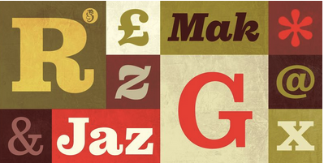
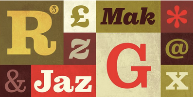

Futura PT & Pulpo - A Study in Contrasts
Additional Information:
Fonts each have their own individual character and factor heavily when dealing with the overall perceptions an audience will have with your project. They can make a wonderful project make millions when coupled with a font that properly fits with it. On the other hand, like with a uniformly derided font like Papyrus for example, it can give an audience hesitation; to put it politely. Here are two examples of fonts that I enjoy, and that speak to me for different reasons.

Futura (PT) is a geometric sans-serif typeface designed by Paul Renner in the 1920s, during what was known as the Bauhaus movement. It is known for its clean lines, modern aesthetic and geometric shapes. Futura is often used in advertising, branding, and editorial design due to its versatility and timeless appeal. It lacks any serifs and focuses on simplicity, with minimal stroke contrast. The typeface is characterized by its circular forms, sharp angles, and minimalistic design, making it a popular choice for contemporary design projects. The PT in this version, stands for ParaType, the company that updated the font and later modernized it for the digital age.

 

In contrast, Pulpo embraces humanist proportions with heavy slab serifs. Its forms are more organic and generous, offering a visual softness and friendliness that Futura deliberately avoids. Pulpo’s structure supports high readability, especially in longer texts, making it ideal for books, branding, and editorial uses where a strong but approachable voice is needed. It features rounded edges, irregular letterforms, and a sense of movement, making it suitable for designs that aim to convey a sense of fun and creativity. Its unique character and fluidity set it apart from more traditional typefaces, allowing for a more expressive and dynamic design.
Pulpo, as its name suggests evokes for me the paperback covers of old pulp novels - like the ones you would read by Donald E. Westlake, Jim Thompson, or the film director Samuel Fuller. I also am reminded of the clean lines of Blue Note jazz recordings from the 1950's and 60's. Futura, on the other hand, is a typeface that I associate with the title cards of exploitation films from the 70's and 80's. Most likely as it was one of the most popular fonts, as well as an industry standard at that time.
In summary, Futura and Pulpo represent two distinctly contrasting design philosophies in typography. Futura embodies modernism and precision, while Pulpo embraces playfulness and creativity. Both typefaces have their own unique strengths and applications, making them valuable tools for designers seeking to convey different messages and emotions through their work.